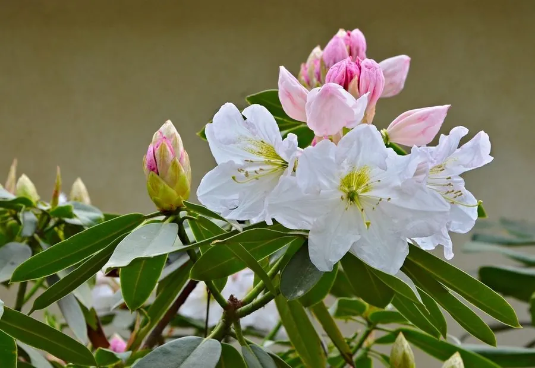

灌木与花木 · 植物界
云锦杜鹃 Rhododendron fortunei

杜鹃花科杜鹃属常绿灌木或小乔木，花冠淡粉、花大如碗，浙江天台山等地的云锦杜鹃花海闻名遐迩。
- 分类
- 门被子植物门纲木兰纲目杜鹃花目科杜鹃花科属杜鹃属
- 栖息环境
- 海拔 800–1800 米的山地林中，喜凉爽湿润、云雾环境
- 地理分布
- 中国浙江、安徽、江西、福建、湖南、广西、贵州等地，为中国特有
- 保护级别
- 暂无 IUCN 评估；野生群落受保护，部分产地建立自然保护区
物种志
云锦杜鹃为杜鹃花科杜鹃属常绿灌木或小乔木，高可达三至四米，树皮灰褐色，幼枝绿色。叶片互生，厚革质，长椭圆形至倒披针形，表面深绿有光泽，背面淡绿色。花六至十二朵组成顶生的伞形总状花序，花冠漏斗状钟形，淡粉色至白色，内面有紫红色斑点，花期四至五月；蒴果长圆柱形，成熟时褐色开裂，果期九至十月。
云锦杜鹃是中国特有的高山杜鹃，分布于浙江、安徽、江西、福建、湖南、广西、贵州等地，多生于海拔八百至一千八百米的山地林中。它喜凉爽湿润、云雾缭绕的环境，要求酸性腐殖质土壤，耐寒而不耐高温。浙江天台山华顶山保存有大面积野生云锦杜鹃林，每年五月花开如云似锦，形成著名的花海景观。花大色雅，也可引种作高山园林观赏植物。
形态与习性
- 株高3–4 m，灌木或小乔木
- 花期4–5 月，花淡粉色
- 果期9–10 月，蒴果圆柱形
- 光照喜半阴，云雾环境最佳
- 水分喜湿润，忌干旱燥热
- 土壤酸性腐殖质土
- 主要用途高山观花，庭园观赏
趣味知识
- 浙江天台山华顶山的云锦杜鹃林树龄多在百年以上，五月花开时漫山如锦。
- 云锦杜鹃的花冠内面带紫红色斑点，是引导昆虫传粉的蜜导。
- 它分布在海拔较高的山地，是典型的高山杜鹃类群。